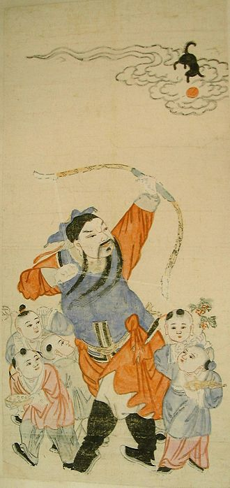

天狗是中国民间传说中的一种动物。最早记载于《山海经》中，原文是：“又西三百里，曰阴山。浊浴之水出焉，而南流于番泽。其中多文贝，有兽焉，曰天狗，其状如狸而白首，其音如榴榴，可以御凶。”如文中所述，天狗是种像狐狸而头部白色的动物，并是御凶的吉兽，很可能是某种古代哺乳类动物，是真实存在过的。但后来演变成用来形容彗星和流星，古人将天空奔星视为大不吉，所以天狗也变成了凶星的称谓。《史记·天官》载：“天狗状如大奔星，有声，其下止地类狗，所堕及炎火，望之如火光，炎炎冲天。”
由于古代中国的人缺乏天文学知识，便把日食现象说成是“天狗吃日”或“天狗吃太阳”。该现象出现时，人们会敲锣打鼓放鞭炮来吓走天狗。
